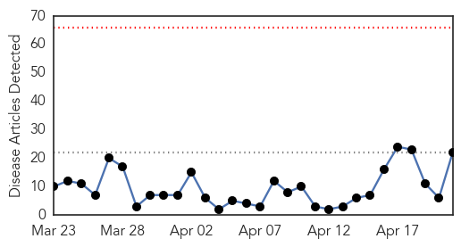
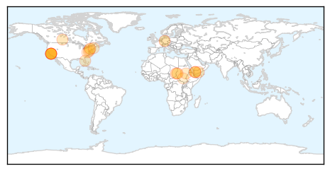

Measles
30-Day Web Trend
0 alerts, 0 warnings

30-Day Twitter Trend
Article Locations
Article Confidences
Top Articles:
- 0.996
- Disney measles outbreak that sparked vaccination debate ends
- 0.969
- Large measles outbreak traced to Disneyland is declared over
- 0.967
- Measles: A Rising Public Health Threat
- 0.965
- Sudan: MSF supports the Ministry of Health to respond to measles outbreak in Sudan - Sudan
- 0.961
- DHHR urges state parents to vaccinate infants
- 0.957
- The anti-vaccination movement: March of the lemmings
- 0.873
- Sudan: Sudan: MSF supports the Ministry of Health to respond to measles outbreak in Sudan
- 0.785
- Vaccine concerns exaggerated
- 0.784
- Get your measles vaccination
- 0.770
- Yemen UN agency warns of deteriorating health situation amid ongoing fighting
- 0.763
- Yemen: UN agency warns of deteriorating health situation amid ongoing fighting
- 0.728
- Get your measles vaccination
- 0.714
- Study rules out link between autism and MMR vaccine even in at-risk kids
- 0.699
- Sudan Vision Daily
- 0.688
- Ca. measles outbreak fades; will Pa. effort to expand vaccination fizzle?
- 0.657
- ‘Vaccinate Your Children’ Public health leaders urge parents in PSAs
- 0.614
- WHO warns of Yemen health crisis as death toll tops 900
- 0.595
- Brevard warns of measles cases in nearby counties
- 0.591
- WHO warns of Yemen health crisis as death toll tops 900
- 0.585
- Large-Scale Study Confirms: Still No Link Between MMR Vaccine and Autism
- 0.567
- Yemen is Fast Becoming a Humanitarian Disaster on Par with Syria and South Sudan
- 0.561
- Another Study Finds No Vaccine-Autism Link
Top Tweets:
-
No tweets found for Apr 21, 2015
Hemmorhagic Fever
30-Day Web Trend
30-Day Twitter Trend
0 alerts, 0 warnings

Article Locations


Article Confidences

Top Articles:
-
No articles found for Apr 21, 2015
Top Tweets:
-
No tweets found for Apr 21, 2015